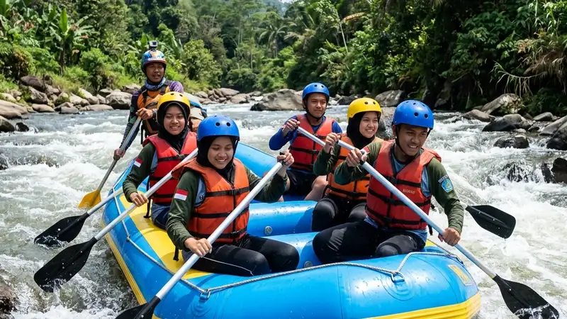

Manfaat rafting pelajar mencakup peningkatan kerja sama tim, kepercayaan diri, dan kedisiplinan siswa, sehingga kegiatan ini sering dijadikan bagian dari karyawisata atau program pembentukan karakter sekolah.
- Rafting melatih kerja sama tim karena setiap perahu membutuhkan koordinasi dayung yang kompak.
- Kegiatan ini dapat membangun kepercayaan diri siswa saat berhasil melewati tantangan arus sungai.
- Rafting membantu melatih kedisiplinan mengikuti instruksi keselamatan dari instruktur.
- Aktivitas ini menjadi sarana refreshing yang menyeimbangkan rutinitas akademik.
- Rafting turut memperkenalkan siswa pada lingkungan alam secara langsung.
Apa Manfaat Utama Rafting bagi Pelajar?
Manfaat utama rafting bagi pelajar adalah melatih kerja sama tim, membangun kepercayaan diri, dan mengembangkan kemampuan mengikuti instruksi di bawah tekanan situasional.
Saat mengarungi sungai, setiap anggota perahu dituntut untuk mendayung secara serempak mengikuti aba-aba instruktur. Kondisi ini secara alami melatih siswa untuk saling mendengarkan dan menyesuaikan gerakan dengan anggota tim lainnya, sebuah keterampilan yang juga relevan dalam konteks belajar kelompok di sekolah.
Bagaimana Rafting Membantu Membangun Kerja Sama Tim?
Rafting membantu membangun kerja sama tim karena keberhasilan mengarungi sungai sangat bergantung pada kekompakan dayung seluruh anggota perahu, bukan kemampuan individu semata.
Beberapa aspek kerja sama yang terlatih selama rafting meliputi:
- Kemampuan mendengarkan instruksi instruktur secara serempak.
- Penyesuaian ritme dayung antaranggota agar perahu tetap seimbang.
- Komunikasi cepat saat menghadapi rintangan di sungai.
- Rasa tanggung jawab terhadap keselamatan anggota tim lainnya.
Mengapa Rafting Dianggap Efektif Membangun Kepercayaan Diri Siswa?
Rafting dianggap efektif membangun kepercayaan diri siswa karena memberi pengalaman langsung menghadapi tantangan fisik yang awalnya terasa menegangkan namun dapat dilalui dengan persiapan yang tepat.
Ketika siswa berhasil menyelesaikan jalur rafting yang semula dianggap menantang, muncul rasa pencapaian yang dapat berdampak positif pada kepercayaan diri mereka dalam menghadapi tantangan lain, termasuk dalam konteks akademik maupun sosial.
Apa Dampak Rafting terhadap Kedisiplinan dan Karakter Siswa?
Rafting berdampak pada kedisiplinan siswa karena kegiatan ini menuntut kepatuhan terhadap prosedur keselamatan dan arahan instruktur secara konsisten selama berada di sungai.
Beberapa nilai karakter yang umumnya turut terbentuk antara lain:
- Kedisiplinan mengikuti aturan dan instruksi keselamatan.
- Keberanian menghadapi situasi yang di luar zona nyaman.
- Empati terhadap sesama anggota tim yang membutuhkan bantuan.
- Tanggung jawab menjaga perlengkapan keselamatan selama kegiatan.
Mengapa Sekolah Semakin Sering Memasukkan Rafting dalam Agenda Karyawisata?
Sekolah semakin sering memasukkan rafting dalam agenda karyawisata karena kegiatan ini dianggap mampu memadukan unsur rekreasi dan edukasi karakter dalam satu paket kegiatan luar kelas.
Selain itu, ketersediaan paket khusus rombongan pelajar dari berbagai operator wisata air turut memudahkan sekolah dalam menyusun agenda kegiatan tahunan tanpa memerlukan persiapan teknis yang rumit.
FAQ
Apakah rafting cocok untuk semua tingkat kelas di sekolah?
Rafting umumnya lebih disarankan untuk siswa tingkat SMP ke atas mengingat kebutuhan kondisi fisik dan kemampuan mengikuti instruksi yang lebih matang.
Apakah manfaat rafting hanya bersifat fisik?
Tidak, manfaat rafting juga mencakup aspek sosial dan psikologis seperti kerja sama tim, kepercayaan diri, dan kedisiplinan mengikuti arahan.
Apakah rafting bisa dijadikan pengganti kegiatan outbound konvensional?
Rafting dapat menjadi alternatif atau pelengkap kegiatan outbound konvensional, tergantung tujuan dan kebutuhan program sekolah.
Arya
penulis artikel yang sudah berpengalaman di dalam dunia wisata outbound Batu Malang.